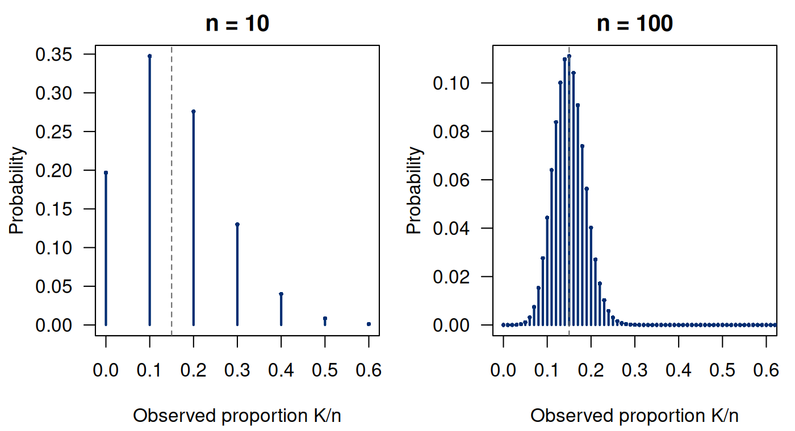
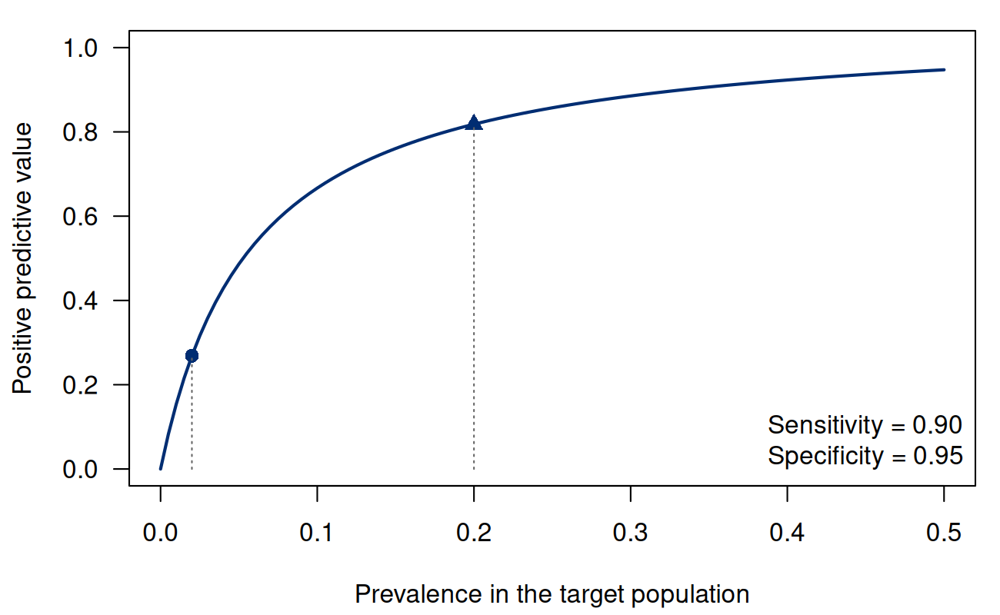

Notes on Statistical Inference
Chapter 1. Probability models and statistical targets
A study reports two events among ten people. The fraction is easy to calculate; its scientific meaning is not. Two out of ten could refer to a one-year event in a defined cohort, a positive laboratory result among referred patients, or a genetic characteristic in an enriched sample. Those quantities have different denominators and different relationships to a population. Before estimating a parameter, we must decide what the observations represent and what question the parameter answers.
We begin with ten completely followed people and a binary event. This small example lets us trace the assumptions behind a familiar proportion. We first define the event and its population probability, then derive the observed count’s distribution. A separate screening example shows how changing the conditioning event changes the question. Repeated sampling and computation then help us distinguish what the model implies from what the study design must establish.
1.1 The question comes before the distribution
Consider a synthetic study of a binary event within one year of enrollment. Define a target population of eligible people at a specified place and period. Suppose every enrolled person has complete one-year follow-up, the event definition is applied consistently, and the ten records represent ten distinct people. Let (1.1) The indicator is one for an event and zero otherwise. It does not encode severity, timing within the year, or recurrent events. Choosing this outcome therefore determines what the analysis can answer. If follow-up were incomplete, replacing an unknown outcome by zero would change the observation problem; the model below would no longer be justified without additional work.
Our initial scientific target is the event probability for a randomly selected member of the target population, (1.2) This is a population quantity, not the observed fraction. It is also not automatically an individual-specific probability conditional on age, genotype, or clinical history. A marginal probability averages over the target population’s composition. Conditional probabilities answer more detailed questions and generally require more detailed data and models.
A parameter labels a member of a statistical model. An estimand is the particular quantity we intend to learn. In this example they coincide because the model has one parameter and the target is . They need not coincide elsewhere: if a model contains several regression coefficients, the scientific estimand may instead be a probability, a contrast between groups, or a transformation of those coefficients. Stating the estimand first prevents a convenient output from quietly replacing the intended question.
1.2 A model is a collection of possible data distributions
We assume initially that (1.3) For one observation, and . The subscript reminds us that probabilities depend on which model member is being considered. The model contains a distribution for every allowed value of ; it does not announce which value is true.
There are several assumptions in this short display. The outcomes are binary. Their marginal event probabilities are equal. Their joint distribution factors because of independence. The sample size is treated as fixed. The event is measured without error, and the sampling population is linked to the stated target population. Some assumptions concern the probability model; others concern how that model is connected to the scientific study. Good algebra within the model does not establish that external connection.
Identically distributed does not mean that the people are identical. It means that the variables have the same marginal distribution for this analysis. If independently sampled covariates differ between people, a marginal Bernoulli model can still be appropriate. In contrast, conditioning on fixed observed covariates with substantially different event probabilities generally leads to independent but nonidentically distributed Bernoulli variables. Their total is not generally binomial. For independent outcomes with probabilities , the sample proportion instead has (1.4) These identities describe the average probability for that fixed collection of individuals. They do not turn that collection into a representative sample of another population. Even with the same average probability, its count distribution can differ from the binomial model: two independent probabilities and give probability of two events, whereas two common probabilities give .
Write the random data set as , and its observed realization as . Capital letters identify quantities that vary across possible samples. Once a sample is observed, its lower-case values are fixed numbers. This distinction will matter when we ask how an estimator behaves before seeing the data, rather than merely describing its value afterward.
1.3 From ordered records to a binomial count
Define the total and the sample proportion, (1.5) For a particular ordered sequence with ones, independence gives probability . There are such sequences. Summing their probabilities gives (1.6) Thus has a binomial distribution. The combinatorial coefficient counts distinct data sequences; it is not an optional adjustment to the probability of the count.
Take . The ordered record contains two events. Its observed count is , and its observed proportion is . There are 45 ordered sequences with the same count. At the illustrative model value , their combined probability is (1.7) The value is a hypothetical model setting used to calculate a sampling distribution. Observing does not reveal that this setting is true. Conversely, the observed proportion does not make all other values of impossible.
| Count | Cumulative | ||
|---|---|---|---|
| 0 | 0.0 | 0.196874 | 0.196874 |
| 1 | 0.1 | 0.347425 | 0.544300 |
| 2 | 0.2 | 0.275897 | 0.820196 |
| 3 | 0.3 | 0.129834 | 0.950030 |
| 4 | 0.4 | 0.040096 | 0.990126 |
| 5 | 0.5 | 0.008491 | 0.998617 |
| 6 | 0.6 | 0.001249 | 0.999865 |
| 7 | 0.7 | 0.000126 | 0.999991 |
| 8 | 0.8 | 0.000008 | 1.000000 |
| 9 | 0.9 | 0.000000 | 1.000000 |
| 10 | 1.0 | 0.000000 | 1.000000 |
The expectation and variance follow directly from the Bernoulli variables: (1.8) Linearity of expectation requires no independence. The variance calculation does: the covariance terms vanish under the model. Dividing by gives (1.9) The first equality is an unbiasedness statement. It concerns an average across hypothetical repetitions, not exact recovery from each sample.
1.4 Repeated sampling and the variability of an estimate
Imagine repeatedly drawing a fresh sample of ten people under the same model. Each repetition produces a new count and a new estimate. The parameter remains fixed in this thought experiment. The distribution in Table 1.1 tells us how frequently the possible estimates would occur under that model. We use the thought experiment to assess a method even when the actual study is conducted only once.
Figure 1.1 compares two sample sizes at the same generating probability. Larger samples put more probability near , although the realized estimate remains random. The vertical dashed line marks the generating value, not an estimated confidence limit. These are discrete probability masses: a line height gives the probability of a particular proportion, so changing the grid of possible proportions also changes the appearance of the distribution.


At , the standard deviation of the sample proportion is . This is the standard deviation across samples under a known hypothetical value of . In an actual analysis is unknown; replacing it by an estimate creates an estimated standard error, with its own limitations. In particular, plugging in zero after observing no events gives zero in this formula, but it does not establish that the population event probability is known without uncertainty.
A simulation can approximate the same sampling distribution. It cannot test the assumption that the original ten people were independent or representative, because those assumptions were built into the simulation. Its immediate purpose here is narrower: verify that code reproduces a probability calculation and make the randomness of estimates visible.
The block includes the model inputs and uses only base R, so it can run in a fresh session.
Run the chapter examples
Copy the block below into a fresh R session. It creates the synthetic data and prints the chapter calculations, with figures in the R graphics window. Only base R is needed.
Complete R example
# probability models and statistical targets.
# All examples are synthetic. Only base R is needed.
set.seed(60201)
n <- 10L
p <- 0.15
k <- 0:n
# Enumerate the count distribution under the specified Bernoulli model.
mass <- dbinom(k, size = n, prob = p)
count.distribution <- data.frame(
count = k, proportion = k / n,
probability = mass, cumulative = cumsum(mass)
)
stopifnot(abs(sum(mass) - 1) < 1e-12,
abs(sum(k * mass) - n * p) < 1e-12,
abs(sum((k - n * p)^2 * mass) - n * p * (1 - p)) < 1e-12)
print(count.distribution, row.names = FALSE)
# Independent simulated studies check exact answers under this model.
B <- 200000L
draws <- rbinom(B, size = n, prob = p)
q <- cbind(proportion = draws / n,
count.two = as.numeric(draws == 2))
mc <- data.frame(
quantity = colnames(q), exact = c(p, dbinom(2, n, p)),
estimate = colMeans(q), MCSE = apply(q, 2, sd) / sqrt(B)
)
mc$error.over.MCSE <- (mc$estimate - mc$exact) / mc$MCSE
stopifnot(all(abs(mc$error.over.MCSE) < 6))
print(mc, row.names = FALSE)
# Screening probabilities depend on prevalence as well as test accuracy.
sensitivity <- 0.90
specificity <- 0.95
ppv <- function(v) {
sensitivity * v / (sensitivity * v + (1 - specificity) * (1 - v))
}
prevalence <- c(0.02, 0.20)
screening <- data.frame(
prevalence = prevalence,
true.positives = 10000 * sensitivity * prevalence,
false.positives = 10000 * (1 - specificity) * (1 - prevalence),
PPV = ppv(prevalence)
)
stopifnot(max(abs(screening$PPV - screening$true.positives /
(screening$true.positives + screening$false.positives))) < 1e-12)
print(screening, row.names = FALSE)
# Draw the sampling and screening figures in the R graphics window.
local({
old <- par(mfrow = c(1, 2), mar = c(4.2, 4.2, 2, 0.8), las = 1)
on.exit(par(old))
for (nn in c(10, 100)) {
xx <- 0:nn
plot(xx / nn, dbinom(xx, nn, p), type = "h", lwd = 2,
col = "#002D72", xlim = c(0, 0.6),
xlab = "Observed proportion K/n", ylab = "Probability",
main = paste("n =", nn))
points(xx / nn, dbinom(xx, nn, p), pch = 16, cex = 0.5, col = "#002D72")
abline(v = p, lty = 2, col = "#666666")
}
})
local({
old <- par(mar = c(4.2, 4.2, 1, 0.8), las = 1)
on.exit(par(old))
curve(ppv(x), 0, 0.5, lwd = 2, col = "#002D72", ylim = c(0, 1),
xlab = "Prevalence in the target population", ylab = "Positive predictive value")
points(prevalence, ppv(prevalence), pch = c(16, 17), cex = 1.2, col = "#002D72")
})
This excerpt shows a step inside the preceding complete R example; it uses that block’s data and setup.
# probability models and statistical targets.
# All examples are synthetic. Only base R is needed.
set.seed(60201)
n <- 10L
p <- 0.15
k <- 0:n
# Check exact answers under this model.
B <- 200000L
draws <- rbinom(B, size = n, prob = p)
q <- cbind(proportion = draws / n,
count.two = as.numeric(draws == 2))
mc <- data.frame(
quantity = colnames(q), exact = c(p, dbinom(2, n, p)),
estimate = colMeans(q), MCSE = apply(q, 2, sd) / sqrt(B)
)
mc$error.over.MCSE <- (mc$estimate - mc$exact) / mc$MCSE
stopifnot(all(abs(mc$error.over.MCSE) < 6))
print(mc, row.names = FALSE)
The Monte Carlo standard error measures uncertainty in a simulated average due to using finitely many simulated data sets. For independent simulated quantities , estimate it by (1.10) It is not the standard error of the original study’s estimate. Increasing improves numerical precision about the model; it does not add observed patients to that study.
| Quantity | Exact | Simulation | MCSE | Error/MCSE |
|---|---|---|---|---|
| proportion | 0.150000 | 0.149835 | 0.000253 | -0.65 |
| count two | 0.275897 | 0.276030 | 0.001000 | 0.13 |
1.5 Conditioning changes the denominator
So far, the event probability has referred to a randomly selected person in the target population. A positive screening result changes the information we condition on. To see the consequence, we now use a separate synthetic screening example: let denote the presence of a condition and a positive test. Suppose sensitivity is , specificity is , and prevalence is . These are illustrative inputs, not claims about a real diagnostic test.
Sensitivity conditions on the condition being present. Positive predictive value conditions on the test being positive. Applying the multiplication rule and total probability gives (1.11) The numerator is the joint probability of having the condition and testing positive. The denominator includes all positive results, including false positives. Reversing the conditional probability without changing the denominator is the central error to avoid.
With prevalence , a hypothetical population of 10,000 produces 180 expected true positives and 490 expected false positives. The resulting positive predictive value is about , despite sensitivity . At prevalence , the corresponding expected counts are 1,800 and 400, giving predictive value about . These are expected counts from the probability model; an actual population need not realize those counts exactly. The R calculation mirrors the two contributions to the denominator: Only base R is needed; the screening inputs are defined in the block.
This excerpt shows a step inside the preceding complete R example; it uses that block’s data and setup.
# Base R; synthetic screening populations of 10,000 people.
sensitivity <- 0.90
specificity <- 0.95
ppv <- function(v) {
sensitivity * v / (sensitivity * v + (1 - specificity) * (1 - v))
}
prevalence <- c(0.02, 0.20)
screening <- data.frame(
prevalence = prevalence,
true.positives = 10000 * sensitivity * prevalence,
false.positives = 10000 * (1 - specificity) * (1 - prevalence),
PPV = ppv(prevalence)
)
stopifnot(max(abs(screening$PPV - screening$true.positives /
(screening$true.positives + screening$false.positives))) < 1e-12)
print(screening, row.names = FALSE)
The variable prevalence contains the two population
prevalences. The columns true.positives and
false.positives are expected counts, while PPV
is the conditional probability computed from their ratio.
| Prevalence | True positives | False positives | PPV |
|---|---|---|---|
| 0.02 | 180 | 490 | 0.268657 |
| 0.20 | 1800 | 400 | 0.818182 |


This calculation uses Bayes’ rule as a probability identity. It does not require a Bayesian prior distribution for an unknown model parameter. Prevalence is a probability concerning a randomly selected person; a prior distribution would describe uncertainty over a parameter in an inferential model. The Bayesian inference chapter (Chapter 8) develops a prior distribution for an unknown parameter and keeps that role distinct from the prevalence in this probability identity.
1.6 The population link is a substantive assumption
Let indicate inclusion in the observed study. The sample may inform , while the intended target is . These are equal only under suitable sampling and observation conditions. A large convenience sample does not establish their equality. The problem is not fixed by calculating its standard error more precisely.
Population composition can make the distinction concrete. If identifies two subgroups, then (1.12) Even if subgroup-specific probabilities remain stable, a change in subgroup proportions changes the marginal probability. This matters for any heterogeneous biomedical population, including one defined by genetic characteristics or patterns of clinical referral. The equation does not assert that subgroup differences are causal.
Dependence is another distinct issue. If each of five independent Bernoulli outcomes is duplicated into two records, the ten records still have marginal mean . Their average remains unbiased for , but its variance is , twice the variance obtained by pretending there are ten independent people. A correct marginal probability is not enough to justify a binomial joint distribution. Record linkage and the sampling design belong in the model assessment.
Finally, measurement can obscure the target even with infinite data. If only a misclassified outcome is observed, then its positive probability is . Without information about sensitivity and specificity, the observed positive rate generally does not identify . If their values are known and , the equation can instead be inverted to give . When , the test’s positive probability is the same whether the condition is present or absent, so even known accuracy parameters leave unidentified from this test alone. Identifiability asks whether different allowed parameter settings can produce the same observable distribution. More precise estimation of that same observable distribution cannot resolve an unidentified decomposition.
1.7 Questions, models and assumptions
Throughout these notes, we will keep the observational unit, outcome definition, target population, estimand and probability model explicit. We will also say which randomness an expectation or variance averages over. These choices determine what a calculation means and which assumptions support it.
For the original ten-person study, the count is two and the population probability remains unknown. The next chapter keeps the independent Bernoulli model and asks how strongly those observations favor one candidate value of over another. We will also ask why the count retains information about within that model even though the individual records remain useful for checking its assumptions.
1.8 Exercises
Selection and measurement. A clinic observes two positive tests among ten referred people. Let indicate a positive test, the presence of a condition, and referral and inclusion in the sample. Specify the observed fraction and the community target for a defined place and period. Identify one sampling assumption and one measurement assumption that would be needed to use the fraction directly for that target. Explain why these are distinct assumptions.
The denominator of predictive value. In a population with condition prevalence , assume sensitivity and specificity apply to this population. Derive , solve for the prevalence giving positive predictive value , and identify the joint-probability contributions to its denominator.
Independent people and duplicated records. Let be independent Bernoulli variables, , and define ten records by . Derive the mean and variance of . Compare its count distribution with a binomial distribution and identify the failed assumption.
What a fallible measurement identifies. Suppose only independent test results are observed and their positive probability is . The measurement model is , where prevalence , sensitivity , and specificity all belong to . Exhibit two admissible triples with different prevalences and this same observable distribution. When are known, derive the identifying formula for , its feasibility condition, and the failure when .